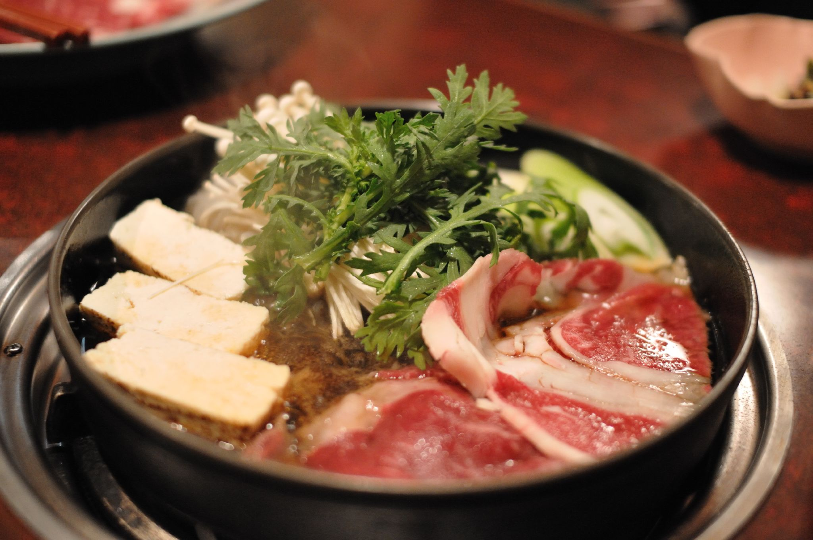

Sukiyaki

Photo: ajari (CC BY 2.0)
Directions
- Heat oil in electric skillet set at medium heat. Add all vegetables except spinach and cook for a few minutes. Sprinkle tomatoes over top so hey stay crisp. Pour consomme or bouillon, soy sauce and sugar over vegetables and stir. Add the spinach and steak. Simmer for a while, serve hot from skillet.
- Heat oil in electric skillet set at medium heat. Add all vegetables except spinach and cook for a few minutes. Sprinkle tomatoes over top so hey stay crisp. Pour consomme or bouillon, soy sauce and sugar over vegetables and stir. Add the spinach and steak. Simmer for a while, serve hot from skillet.
https://baron-3dl.github.io/normans-kitchen/recipe/sukiyaki.html